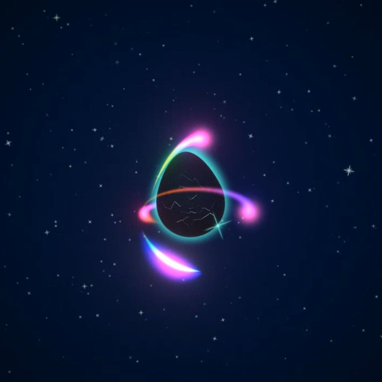
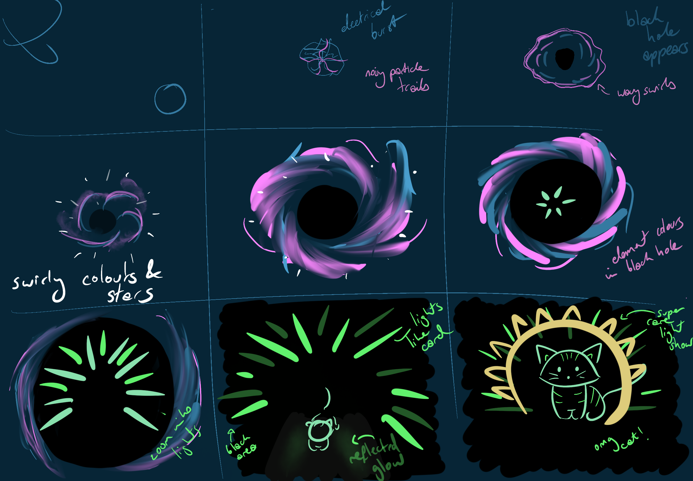
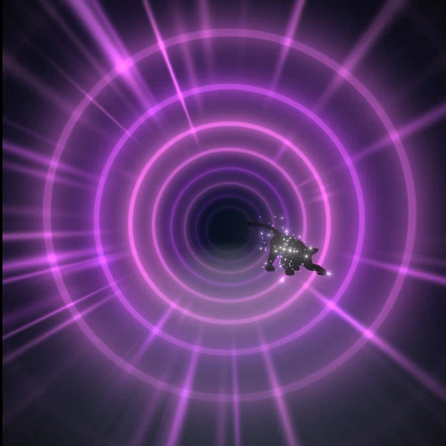

Video // Pre-rendered video
Tiny Rebel Games
Made in Unity
Pet “reveal video” for an unreleased tamagotchi type mobile game
We wanted the pets to hatch, before they are finally revealed. I worked with the concept artist and 3D artist to come up with the sequence, my storyboard below is the combination of all our ideas.
Then I created all of the effects in Unity, with the old particle system and special shaders on the planets. It was then recorded in engine.
The fade to white when the cat mesh is enabled meant that we could pre-render the video and only have the last little bit need to be unique to the different coloured cats.


